The source face remains the anchor throughout the transfer.
Accepted · ACM SIGGRAPH 2026
HairPort
In-context 3D-Aware Hair Import and Transfer for Images
A 3D-aware hairstyle transfer framework that separates bald conversion from synthesis and aligns reference hair in 3D — producing identity-preserving results across challenging differences in pose, scale, and style.

Abstract
Bald conversion, 3D-aware alignment, then synthesis.
Transferring hairstyles between images is an important but challenging task in computer graphics, computer vision, and visual effects. It enables users to explore new looks without physically altering their hair, with applications in virtual try-on, augmented reality, and entertainment. Most prior work operates best under small pose gaps and falls short under large viewpoint or scale differences, where missing hair must be synthesized rather than transferred.
We propose HairPort, a 3D-aware hairstyle transfer framework that addresses these issues by explicitly separating hair removal from transfer and enforcing geometric consistency before synthesis. We introduce a Bald Converter, which produces realistic bald versions of faces through LoRA-based in-context adaptation of FLUX. To train it we release a new dataset, Baldy, containing 6,400 paired bald and original images across diverse identities and conditions.
We also use a 3D-Aware Transfer Pipeline that reconstructs and re-renders the reference hairstyle from the target viewpoint before compositing it onto the source image. Being 3D-aware, our method supports large pose and scale discrepancies between source and reference. With these components in place, we employ a conditional flow-matching generator to synthesize the final image conditioned on the bald source, the pose-aligned hair rendering, the original reference image, and a text prompt. Together, these enable accurate, pose-consistent, and identity-preserving hairstyle transfer that outperforms prior work both qualitatively and quantitatively.
Contributions
Four parts that make 3D-aware hair transfer practical.
HairPort decouples each stage of the transfer so failure modes can be reasoned about and improved independently.
-
01
Bald Converter
LoRA-based in-context adaptation of FLUX that removes source hair while preserving face, expression, lighting, and background.
-
02
Baldy dataset
6,400 paired bald and original portraits spanning diverse identities and conditions, enabling supervised in-context bald generation.
-
03
3D-aware transfer
Reconstruct and re-render the reference hairstyle from the source viewpoint, so large pose and scale gaps stop hurting transfer fidelity.
-
04
Flow-matching synthesis
A conditional flow-matching generator fuses the bald source, pose-aligned hair rendering, reference, and prompt into a coherent edit.
Featured result
Reference style in — source identity preserved.
HairPort imports the reference hairstyle while keeping the source face stable, even when the reference differs in viewpoint, scale, lighting, or identity.
Color, shape, length, and local hair structure are imported from the reference.
Reference hair is reconstructed and re-rendered before final synthesis.
Bald Converter results
A clean source canvas before transfer.
The Bald Converter removes source hair while preserving face, expression, clothing, lighting, and background context. Drag each slider to compare the original and generated bald portrait.
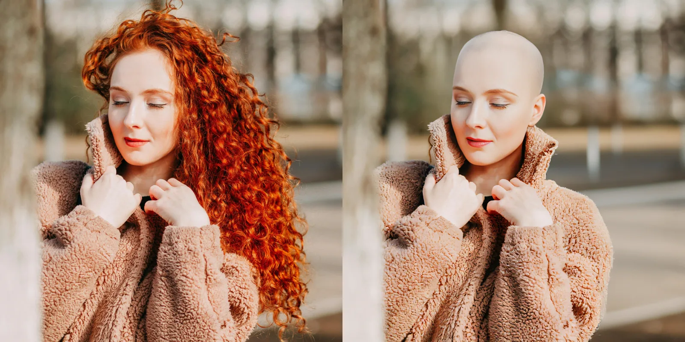
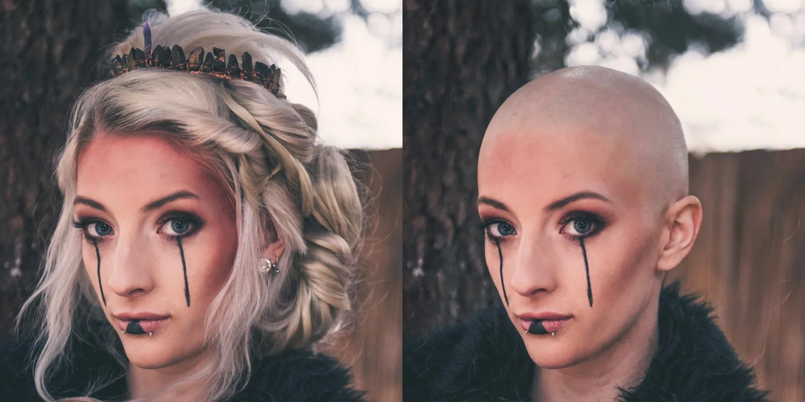
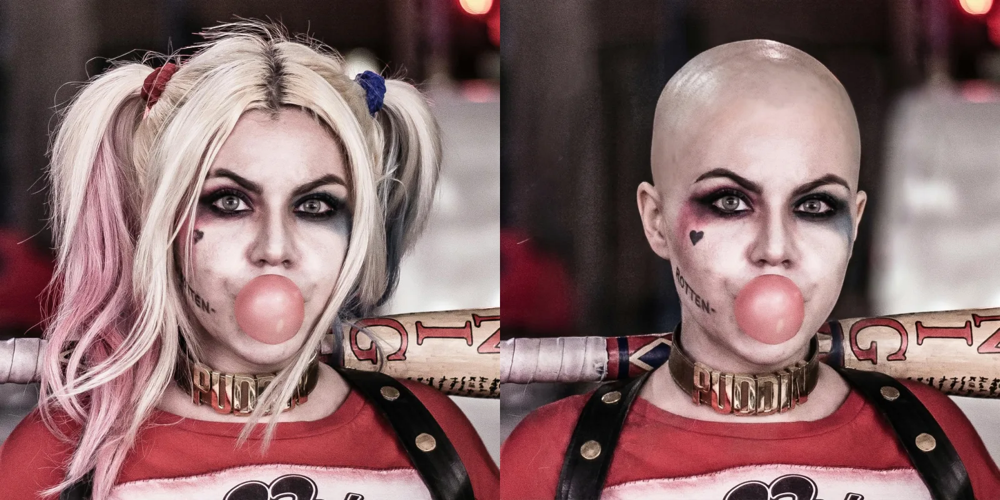
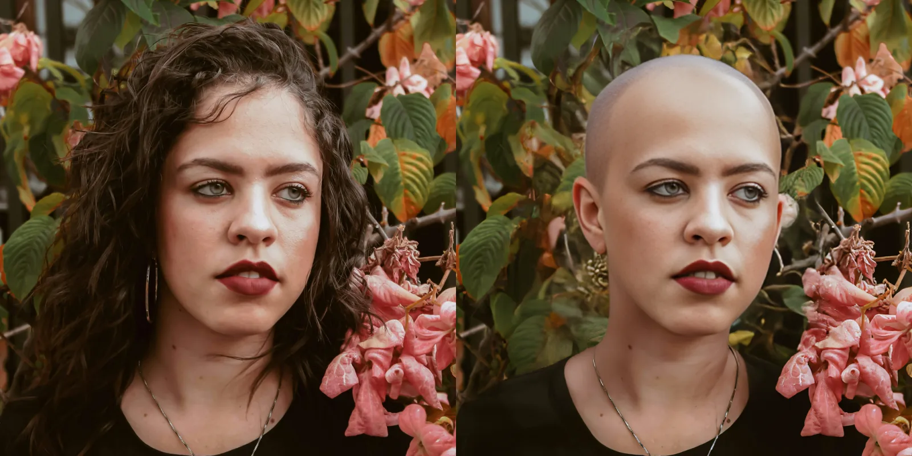
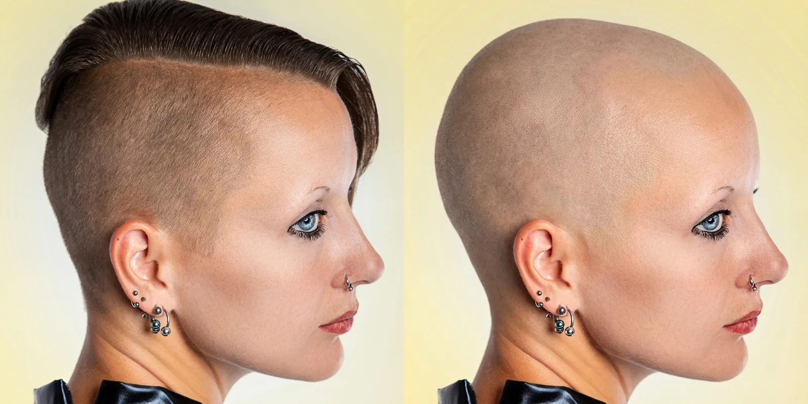
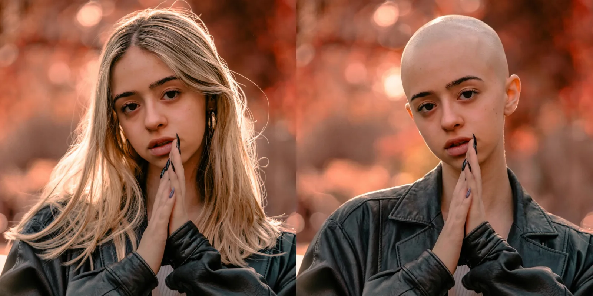


Transfer gallery
Reference hair in. Source identity out.
Each panel shows the source face, the hairstyle reference, and the final transfer result. Use the carousel to inspect challenging changes in shape, color, pose, and scale.
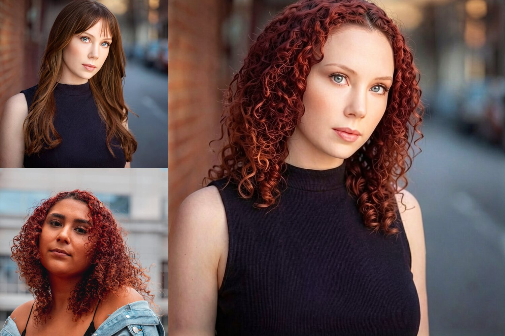
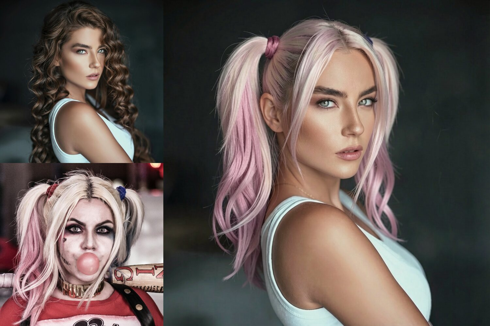
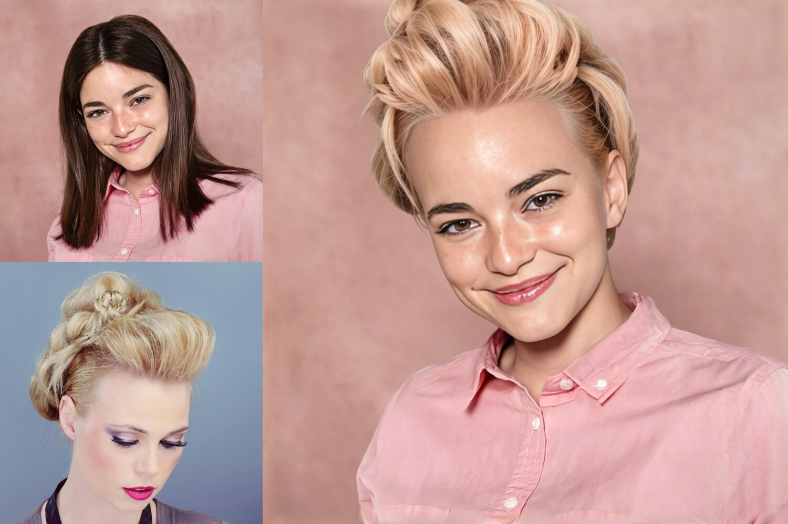
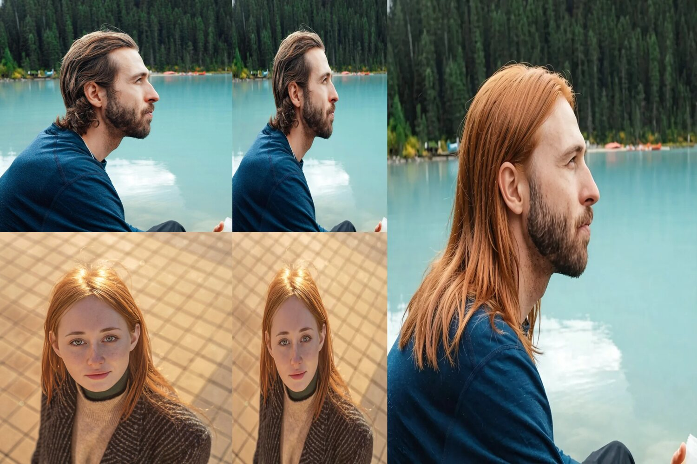
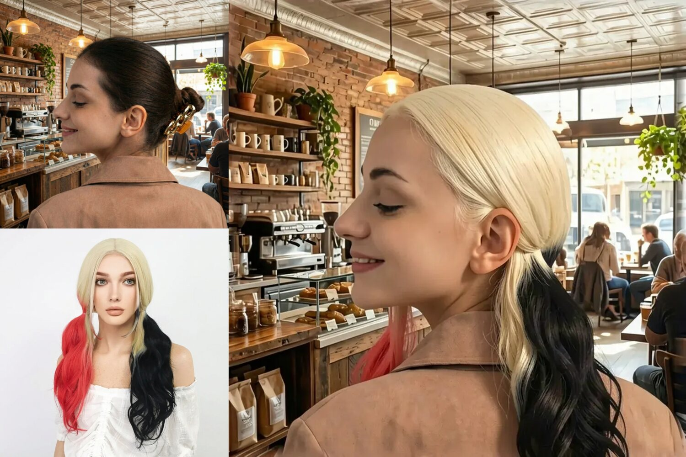
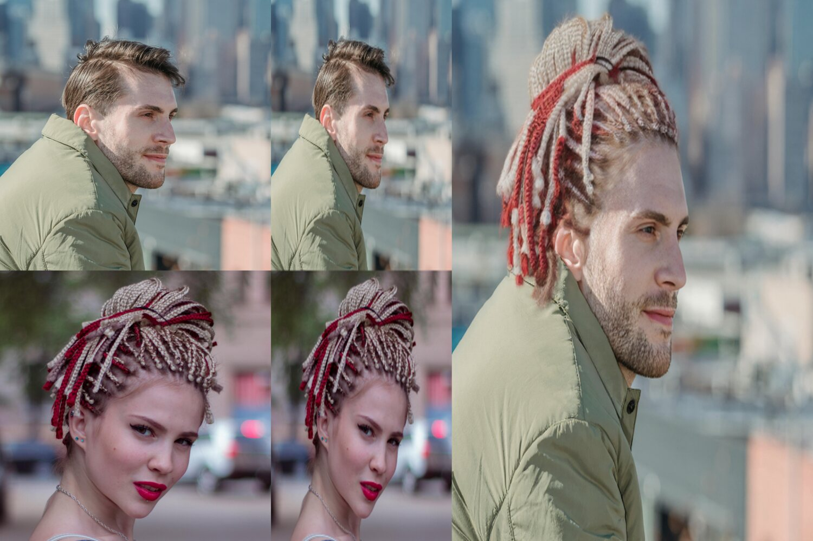


Method
A pipeline built around source-aligned hair evidence.
HairPort removes source hair, aligns reference hair with 3D geometry, and conditions the final synthesis on the bald source, the pose-aligned hair rendering, the original reference, and a text prompt.

Bald Converter · Baldy
A dedicated bald-generation stage.
The Bald Converter produces realistic bald versions of source portraits using LoRA-based in-context adaptation of FLUX. Baldy provides paired bald/original supervision across diverse identities and conditions.
- 6,400 paired images
- FLUX base model
- LoRA in-context

Pipeline
Nine stages, decoupled and inspectable.
The pipeline is exposed as discrete stages so individual steps can be re-run, swapped, or audited. Each stage writes to a documented data layout under data_dir.
-
01
Baldify
Generate a realistic bald source portrait using the Bald Converter.
-
02
Caption
Outpaint bald images and generate text descriptions with Qwen Image-Edit.
-
03
Shape mesh
Simplify and frontalize externally generated 3D head meshes.
-
04
Landmark 3D
Estimate 3D facial landmarks via Blender renders and MediaPipe fusion.
-
05
Align view
Optimize camera alignment from reference hair to the source face.
-
06
Render view
Generate textured target-hair views with MV-Adapter and SDXL.
-
07
Enhance view
Refine rendered views with FLUX.2 Klein 9B and CodeFormer.
-
08
Blend hair
Warp and Poisson-blend enhanced hair onto the bald source.
-
09
Transfer hair
Synthesize the final 3D-aware hairstyle transfer.
Code & assets
Source preview, dataset, and weights are available.
The official SIGGRAPH 2026 implementation snapshot is online today. Packaging, dependency manifests, and console-script entry points are still being finalized.
GitHub
HairPort source code
Official SIGGRAPH 2026 implementation snapshot.
Open repository
README
Install & run
Setup, source-preview caveats, and usage examples.
Read setup
Dataset
Baldy
6,400 paired bald and original portraits.
Download dataset
Weights
Bald Converter LoRAs
Adapters for in-context bald generation.
Download weights
News
Latest updates.
- HairPort was accepted to ACM SIGGRAPH 2026.
- Project page launched at deepmancer.github.io/HairPort.
- Initial source preview released; packaging and dependency manifests will be finalized soon.
- Baldy dataset and Bald Converter LoRA weights released on Hugging Face.
Citation
Use HairPort in your research?
If our work helped, please cite the ACM SIGGRAPH 2026 paper.
@inproceedings{heidari2026hairport,
title = {HairPort: In-context 3D-Aware Hair Import and Transfer for Images},
author = {A. Heidari and A. Alimohammadi and W. Michel Pinto Lira and A. Bar-Lev and A. Mahdavi-Amiri},
booktitle = {ACM SIGGRAPH 2026},
year = {2026}
}Acknowledgements
Built on excellent open work.
HairPort builds on a number of excellent open-source projects and research assets. We thank the authors and maintainers of MV-Adapter, Hi3DGen, CodeFormer, SHeaP, FLAME, MediaPipe, Segment Anything, BEN2, Hugging Face Diffusers/Transformers, FLUX, and Qwen.